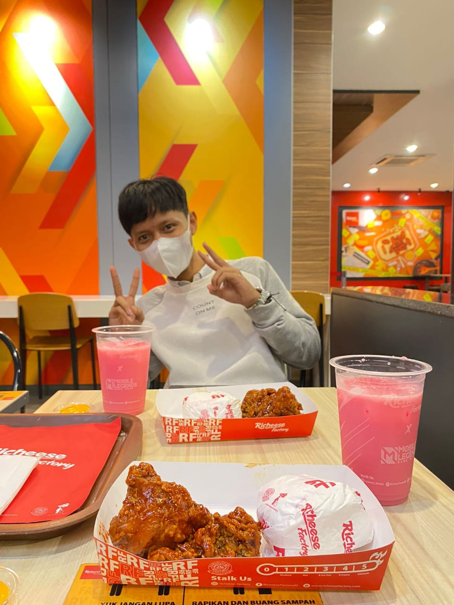

Saya adalah fresh graduate Teknik Informatika yang memiliki minat yang mendalam pada pengembangan website khususnya dengan PHP dan Laravel, serta pengalaman dalam dunia networking dan embedded systems. Saya memiliki keahlian dalam membangun aplikasi web yang dinamis dan efisien menggunakan Laravel, serta pengetahuan dalam konfigurasi jaringan dan pengembangan sistem embedded.
Teknik Komputer dan Jaringan | 2017 - 2020
Selama menempuh pendidikan di SMKN 10 Malang, saya fokus pada bidang Teknik Komputer dan Jaringan,
mempelajari dasar-dasar jaringan komputer, perancangan jaringan, manajemen server, serta keamanan jaringan.
- Ekstrakurikuler : Anggota aktif klub jaringan sekolah, di mana saya turut serta dalam merancang dan mengelola jaringan internal sekolah.
Teknik Informatika | 2020 - 2024
Di Institut Teknologi Nasional Malang, saya memperdalam pengetahuan dalam bidang Teknik Informatika dengan fokus pada pengembangan aplikasi web, jaringan komputer, dan sistem embedded.
- Proyek Penelitian: Berpartisipasi dalam pengembangan aplikasi web menggunakan Laravel untuk proyek penelitian.
- Skripsi: Implementasi Peramalan Harga Bahan Baku Menggunakan Metode Trend Moment Berbasis Website.
- Kegiatan Ekstrakurikuler : Menjadi Asisten Laboratorium Pemrograman Komputer Teknik Informatika 2021 - 2024.
Laboratorium Pemrograman Komputer Teknik Informatika | 2021 - 2024
Membantu dosen dalam mempersiapkan materi praktikum pemrograman, serta memberikan bimbingan kepada mahasiswa dalam memahami konsep-konsep dasar pemrograman. Selain itu, juga berkontribusi dalam pengelolaan infrastruktur laboratorium.
PT Naraya Telematika | Desember 2024 - Mei 2025
Bertanggung jawab dalam menangani permasalahan teknis jaringan dan infrastruktur IT, memberikan dukungan teknis kepada pelanggan, serta melakukan troubleshooting dan pemeliharaan perangkat jaringan untuk memastikan operasional berjalan dengan optimal.
PT Naraya Telematika | Mei 2025 - Sekarang
Memantau dan mengelola infrastruktur jaringan secara real-time untuk memastikan ketersediaan dan performa layanan jaringan. Bertanggung jawab dalam deteksi dini gangguan jaringan, koordinasi penanganan insiden, serta menjaga kestabilan dan keandalan jaringan secara keseluruhan.
Aplikasi web ini dirancang untuk memberikan rekomendasi perawatan wajah dan kuku yang dipersonalisasi dalam lingkungan spa. Menggunakan Laravel dan algoritma k-Nearest Neighbors (KNN), aplikasi ini menganalisis data perawatan rutin dan perawatan sebelumnya dari pelanggan. Dengan membandingkan pola perawatan yang ada, aplikasi ini memberikan saran perawatan yang paling sesuai untuk meningkatkan kepuasan pelanggan dan mengoptimalkan layanan spa. Fitur utama termasuk antarmuka pengguna yang intuitif untuk memasukkan preferensi, rekomendasi waktu nyata berdasarkan perawatan sebelumnya, serta integrasi dengan sistem manajemen spa untuk kemudahan operasional.
Aplikasi web ini dirancang untuk meramalkan harga bahan baku menggunakan metode Trend Moment, dibangun dengan Laravel. Aplikasi ini memanfaatkan data harga bahan baku sebelumnya untuk memprediksi tren harga di masa depan. Metode Trend Moment digunakan untuk menganalisis fluktuasi harga dan memberikan proyeksi yang akurat. Fitur utama aplikasi meliputi input data historis, analisis tren harga berbasis metode Trend Moment, dan visualisasi hasil peramalan dalam bentuk grafik dan laporan. Aplikasi ini membantu perusahaan dalam merencanakan anggaran dan strategi pengadaan bahan baku dengan lebih efektif.
Aplikasi absensi guru ini dirancang untuk mempermudah pencatatan dan pengelolaan kehadiran guru di sekolah. Dibangun dengan Laravel, aplikasi ini memungkinkan guru untuk melakukan absensi secara elektronik melalui antarmuka pengguna yang sederhana. Fitur utama termasuk pencatatan kehadiran harian, laporan absensi terperinci, dan pengelolaan data guru. Aplikasi ini juga menyediakan integrasi dengan sistem manajemen sekolah serta laporan statistik yang membantu pihak administrasi dalam memantau kinerja dan kehadiran guru secara efektif.
Proyek ini mencakup desain UI/UX untuk aplikasi tempat cuci sepatu yang bertujuan memberikan pengalaman pengguna yang intuitif dan menyenangkan. Aplikasi ini dirancang untuk mempermudah pelanggan dalam memesan layanan cuci sepatu secara online. Fitur utama dari desain ini termasuk antarmuka yang bersih dan modern, navigasi yang mudah, serta sistem pemesanan yang efisien. Desain juga mencakup fitur penjadwalan layanan, pelacakan status cuci sepatu, dan integrasi dengan sistem pembayaran untuk memudahkan transaksi. Fokus utama adalah pada kemudahan penggunaan dan kepuasan pelanggan dengan menyediakan desain visual yang menarik dan fungsional.
Aplikasi POS berbasis web modern yang dirancang untuk UMKM. Dibangun dengan Laravel 11, Vue.js 3, Inertia.js, dan Tailwind CSS. Menghadirkan antarmuka kasir yang dioptimalkan untuk kecepatan transaksi (~5 detik), dashboard pelaporan komprehensif, sistem multi-tenant dengan Row-Level Isolation, serta Role-Based Access Control (RBAC) untuk pemisahan akses Owner dan Kasir. Menerapkan Service Layer Pattern untuk kode yang modular dan maintainable.
Sistem Informasi Akuntansi komprehensif berbasis web dengan prinsip Double-Entry Bookkeeping. Dibangun menggunakan Laravel 10, PostgreSQL, Redis, dan Vanilla JS sebagai SPA tanpa framework frontend. Fitur utama mencakup otomatisasi penyusutan aset, laporan keuangan real-time (Neraca, Laba Rugi, Arus Kas), manajemen Kas & Bank, serta deployment modern dengan Docker dan CI/CD GitHub Actions.
MTCNA — Sertifikasi dasar jaringan MikroTik yang mencakup konfigurasi router, manajemen IP, routing, dan keamanan jaringan menggunakan perangkat MikroTik.
Lihat SertifikatMTCRE — Sertifikasi tingkat lanjut yang berfokus pada konfigurasi routing dinamis, protokol BGP, OSPF, dan manajemen jaringan kompleks menggunakan RouterOS.
Lihat SertifikatMTCTCE — Sertifikasi yang berfokus pada manajemen traffic jaringan, QoS, bandwidth management, dan optimasi performa jaringan menggunakan MikroTik.
Lihat Sertifikat© Made By Love. All Rights Reserved.
{kind=link}
{kind=link}
{kind=link}
{kind=link}
{kind=link}
{kind=link}